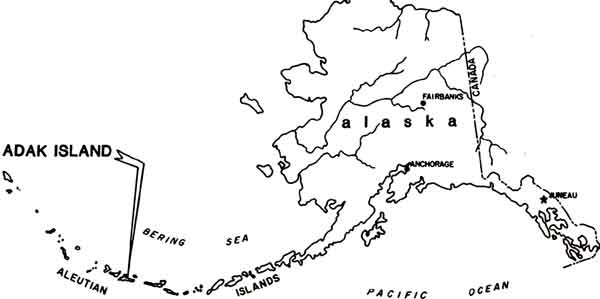

|
 PRISONERS OF THE WILLIWAW PRISONERS OF THE WILLIWAW
What would happen if three hundred hardened convicts
petitioned the United States Government for an abandoned island where,
accompanied by their families, they would be set free to earn their own
way?
Overwhelmed by prison budgets and prison riots, the government agrees
and sets the prisoners free on windswept, treeless Adak in the
Aleutians, the site of a former 'hard duty' Navy station.
Prisoners Of The Williwaw is the story of the power struggle between
the idealistic leader of this expedition, convict Frank Villa, and a
smooth prison boss, James T. Gilmore. Frank Villa
opens a school, arranges jobs for people in a small assembly factory
and calls for free elections. 'Boss' Gilmore opens
a house of prostitution, sells booze, drugs, and guns, and schemes to
take over the island one way or another.
Frank's struggle is internal as well as external. He
strives to overcome the effects of prison on his psyche. A
convict must be passive; a man in charge of a community must take
command. A convict must build a wall inside
himself against any relationship with a woman; a free man has to leave
himself open to love.
The strife between Villa and Gilmore accelerates when their wives
arrive and unexpected complications develop.
These conflicts play out against a backdrop of constant rain, vicious
windstorms (williwaws), escape attempts, and a coup by
a new group of prisoners from the federal penitentiary in Florence,
Colorado, the worst of the worst.

To read the opening chapter, click here.
Reader comments:
"Two million Americans now sit in prison.
Here’s a new/old idea that might just provide an
alternative. It’s a hell of a story."
Don McQuinn,
author of the trilogy Warrior,
Wanderer, Witch as
well as With Full Honors and The Prisoner Within.
"Last week Friday Ed Griffin's book, Prisoners of the
Williwaw, arrived in the mail from Amazon.com. I read it on Saturday.
My interest was primarily to see if Ed Griffin could capture the
"essence" of life on Adak, and he does a very good job. He
proposes Adak as a prison community. Earthquakes have broken the pipes,
the wind has destroyed quite a lot, and the prisoners are very
unwilling to depend on each other for their lives, which of course is
exactly what they must do.
It sure seems that Ed has personally done some tundra stomping along
the routes that he describes in his book, particularly going to Shagak
Bay, Finger Bay, climbing toward Razorback mountain. But
it’s not just a travelogue of Adak; it is a
good story and I read it in one sitting. You may find that prisoners'
lives and the lives of younger sailors are not far different,
especially on Adak where the same barriers exist for sailors as it did
for the prisoners in Ed Griffin's story."
Michael Gordon, Chief Data Processing
Technician, USN (Ret.), 2 tours of duty on Adak,
1976-78,
1987-88
"It is the story of an elemental battle on so many levels, the
struggle against nature and the weather paralleling the struggle
between the factions. The basic idea of what is true freedom, and how
do you get there, is thought-provoking."
Sue Legault, Journalist
and Spiritual writer
"The book describes how offenders are forced to live and work
together, resolving the conflicts in life."
Ricardo Scarpino, Matsqui Federal
Penitentiary,
"Wow. That was some book. I
couldn’t put it down!"
Sue Harper, School Principal
"I found the Prisoners of the Williwaw easy to read and
exciting."
Doug Funk, businessman.
"Just finished reading Ed Griffin's 'Prisoners of the
Williwaw.' This is a great read. Not only a gripping fictional journey,
the story offers up some interesting ideas about the ethics of
incarceration. This from someone who knows a bit about our penal
system."
Phil Jones,
Technician
"With both an outside and inside view, Griffin has grasped an
interesting concept for an alternative to prison."
Scott Hulshof, Matsqui Federal
Penitentiary
"It's a page-turning read that kept me engaged in the
infrastructure of inmate societies and their power to destroy or
recover the soul."
Janice Hodgkinson, writer and office
assistant.
"I found the story to be an interesting concept, with a
potential for being a reality."
B. F.Nagey, Jewelry Designer, Chicago.
To purchase a copy, go to Cordillera North
Publications.
A printed copy, signed by the author, is $15.00. Shipping is $10.00.
The ebook version is $2.99.
|